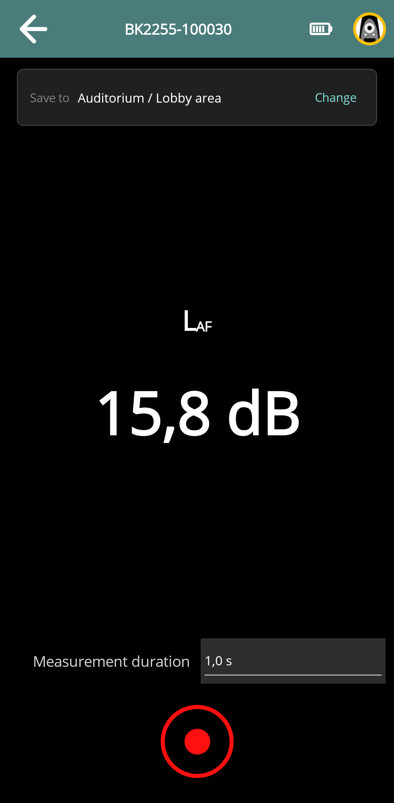
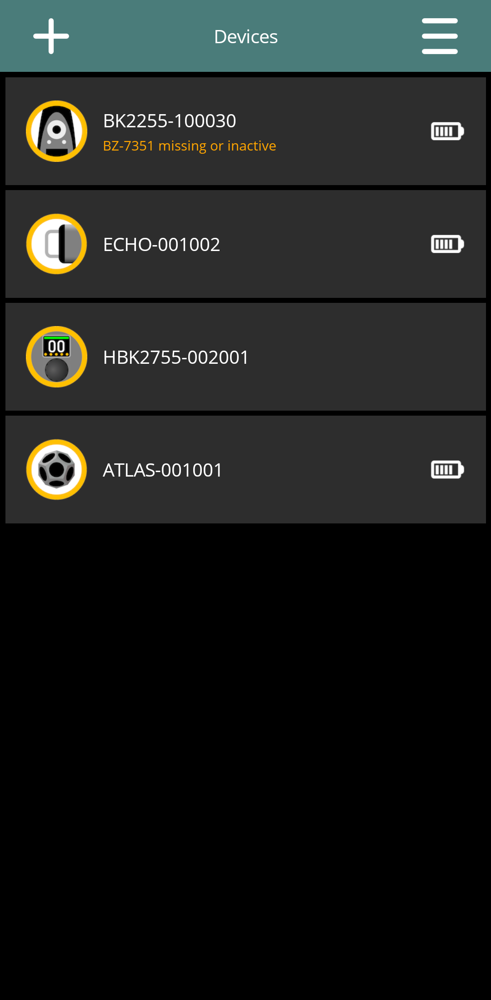

Using HBK 2255
Draft for review: These DIRAC Field instructions and illustrations are being reviewed.
On this page
DIRAC Field uses HBK 2255 as a recording receiver. The control page shows input-level information and recording controls. It does not provide Aether's selectable SLM workflow; the HBK's functions operated locally are outside this app guide.
Read the control page
Check the selected device name, connection and battery state. The main area contains an input-level readout, the Save to destination, Measurement duration and the recording action. Use the level indication to check signal presence before acquisition.
Use the HBK equipment's own microphone setup and calibration procedures. DIRAC Field's Calibrate Aether dialog is not an HBK 2255 calibration control.


Make a recording
- Open the HBK 2255 card on Devices, complete authentication if required, and wait for the recording control page to be ready. Confirm that the BZ-7351 option is active; otherwise Record remains disabled.
- Check microphone preparation and the input-level indication.
- Check Save to, choose Measurement duration, and tap Record.
- Wait for preparation, capture and retrieval. If you interrupt the run, check its final status and the retrieved duration.
- Open the destination group and inspect the saved receiver data.
The duration labels are rounded for display. Use the saved data to check the exact duration when timing matters. A recording-only run can acquire from other available recorders too; inspect the receiver identity associated with each result.
Retrieval is part of completing the app measurement. A recording that exists on the HBK but was not successfully retrieved is not yet a usable local result in DIRAC Field. Keep the instrument and its original recording available while investigating a retrieval failure.
Recording prerequisite: BZ-7351
For every HBK 2255 recording, including recording-only capture and source-triggered measurements, DIRAC Field requires the HBK 2255's BZ-7351 status to be verified as active. The Devices list can show BZ-7351 missing or inactive or BZ-7351 status not verified. An unverified state is not a confirmed active licence.
The Record button is disabled when the option is missing, inactive or not verified. Each HBK 2255 in a multi-recorder run needs its own active BZ-7351 option. DIRAC Field checks the option again on the meter before starting a recording. Resolve the licence/status issue before recording from this page or participating in a run started from Echo, Atlas or HBK 2755. Previously saved measurements remain available.


Use HBK 2255 with a source
Connect and authenticate the receiver, verify its eligibility, then open the desired source's control page. Configure the source, check the destination and use its measurement action. For a multi-receiver run, check that each expected receiver supplied usable data.
Using a source does not make every capture an impulse response. The selected stimulus and the processing supported for it determine the result. See Match signal and analysis.
HBK 2255 settings
From its control page, open menu → Settings to inspect identity, network address and reported power information. In Measurement, set and Save the default source–receiver distance in metres for new captures. Correct individual existing measurements through their metadata editor.
Power actions are offered where supported. The app's AE Network configuration editor, unified device password, Aether LEDs and Aether recovery/reset workflow are not HBK 2255 settings. Use the HBK's own controls and documentation for configuration that DIRAC Field does not expose.